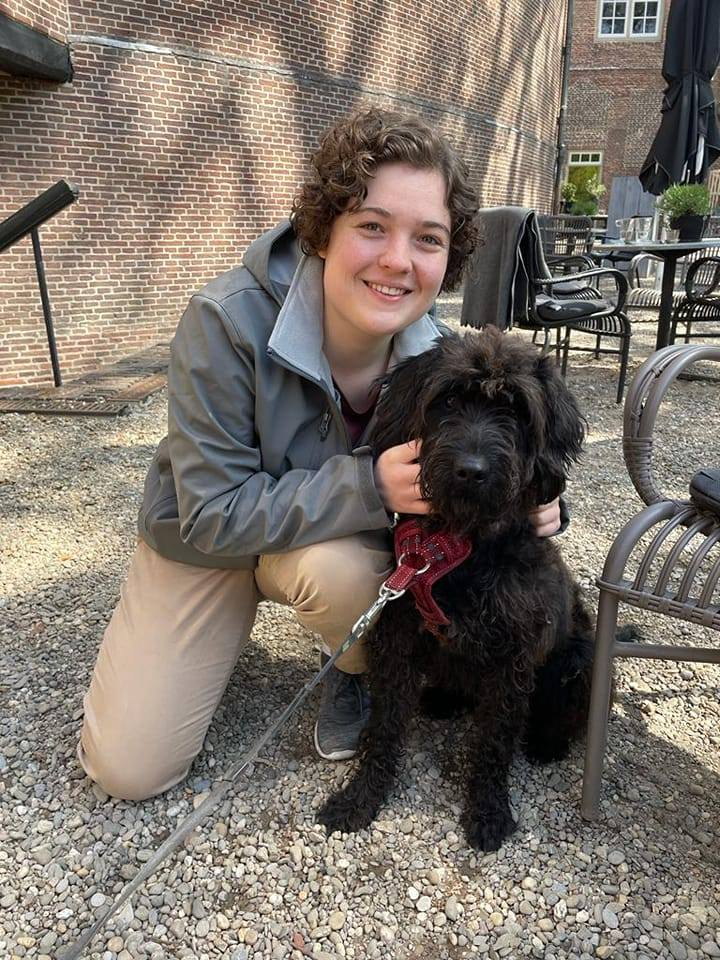

Welcome to Bernice's Website
Ik ben op een reis om IT'er te worden. Hiervoor heb ik me ingeschreven voor een cursus back-end engineer. Gek genoeg moeten wij daarvoor ook web design leren maar we doen ons best!

Ik ben op een reis om IT'er te worden. Hiervoor heb ik me ingeschreven voor een cursus back-end engineer. Gek genoeg moeten wij daarvoor ook web design leren maar we doen ons best!